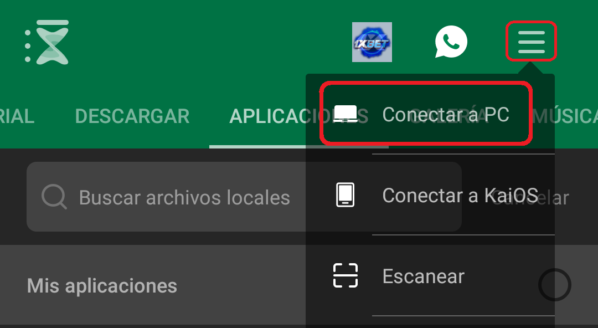
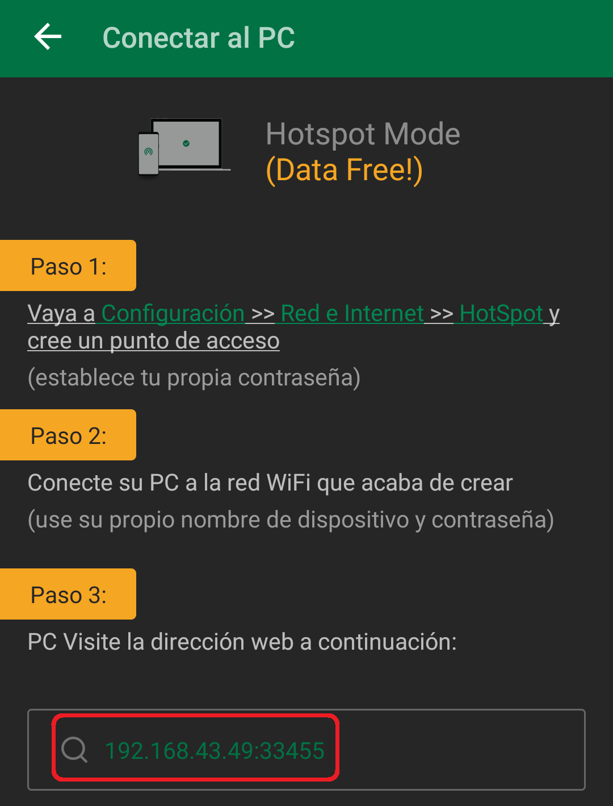
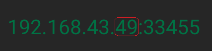

Generador de URL Xender
Xender permite transferir archivos entre un teléfono y una PC de forma inalámbrica sin usar datos.
Como conectar los dispositivos
Accede a esta página en la PC que quieras conectar e instala la aplicación en tu teléfono aquí: Descargar Xender Playstore, Tu teléfono y PC deben estar conectados a la misma red (Hotspot o Wifi)
Abre la aplicación en tu Android, En el menú superior derecho accede a Conectar a PC.
Encuentra la dirección IP indicada en la parte inferior.
Identifica el número que se encuentra entre 192.168.43. Y el :33455
Consejo: puedes leer la IP de derecha a izquierda y leyendo el numero anterior a los :
Ingresa ese número Aquí, presiona Enter, Acepta los permisos y tus dispositivos estarán conectados!!
Si el generador no funciona, verifica que el número sea el correcto.
Si tu teléfono se desconecta de la red, es probable que el número cambie.
Xender cuenta con una guía que te ayudara a navegar por su interfaz.
Los archivos que transferimos al telefono se almacenan en la carpeta Xender ubicada en el directorio raiz del dispositivo.
¿Como Funciona Xender?
Cuando iniciamos la aplicación en nuestro teléfono, Xender actúa análogo a una página web la cual solo pueden solicitar acceso los dispositivos que se encuentran en la misma red, también les brinda una interfaz útil y amigable que permite encontrar e intercambiar rápidamente los documentos que necesitemos.
¿Porque cambia la URL?
De forma genérica, las redes asignan direcciones de IP dinámicas para sus dispositivos
conectados, asignando una dirección disponible que no se esté utilizando en el momento.
Las direcciones de IP estáticas suelen dar problemas de asignación de identidad en redes
donde los dispositivos conectados se modifican con frecuencia, ya que pueden coincidir
varios dispositivos con una misma dirección.
Para solucionar esto, cada vez que un dispositivo se conecta, su dirección IP se actualiza,
siendo la mayoría de las veces diferente a la asignada anteriormente.
¿Donde se aloja Xender?
Xender inicia un servidor web en nuestro teléfono al cual accedemos desde otro dispositivo al ingresar como URL la IP actual del teléfono en la red, dentro de la misma el servidor se encuentra alojado en el puerto 33455.
¿Que hace esta pagina?
Brindamos una solución que facilita el tipeo de la URL requerida para abrir Xender en otros dispositivos, autocompletando las partes estáticas del mismo. También compartimos documentación para adquirir, utilizar y entender esta herramienta.
Cerrar ¿Como Funciona?